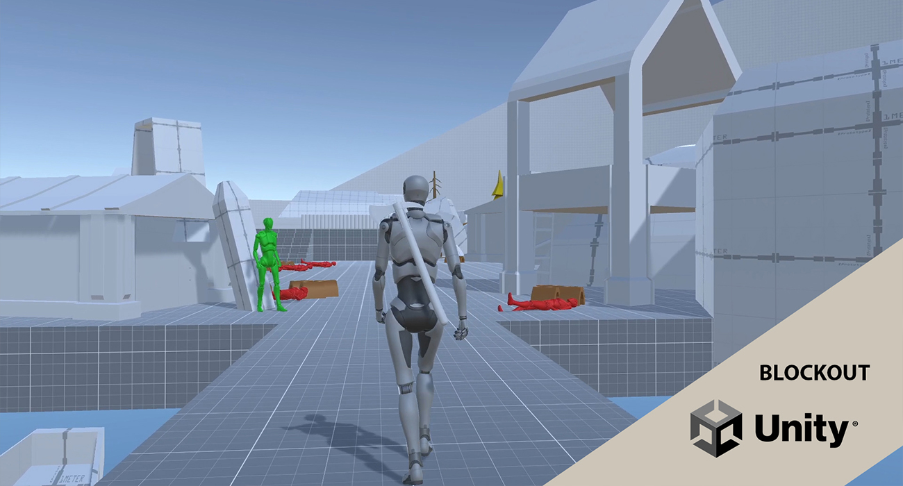
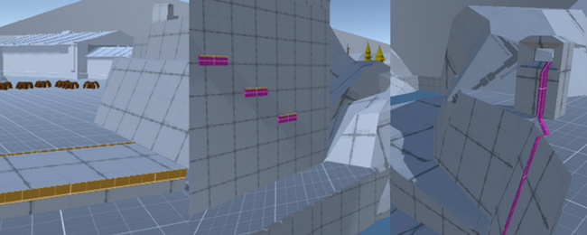
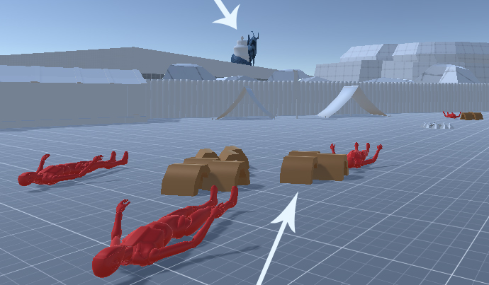
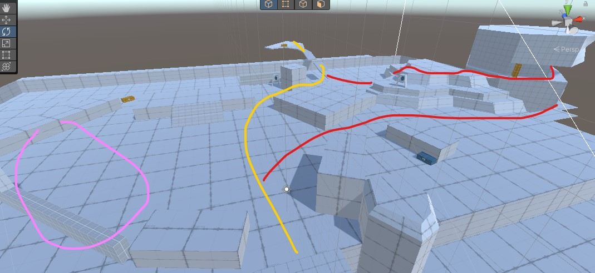

God of War Blockout : The Hero Camp

- Project Name
- The Hero Camp
- Platform
- Unity
- Role
- Level-Designer
- Date
- Oct. 2022
A side quest on the Lake of nine
The 2018's God of War is an action-adventure game well known for its universe and its storytelling, Kratos and Atreus relationship evolving through they journey.
I wanted to design a small blockout level to improve my workflow on this type of game. I really enjoyed the Lake of nine's design and its coherence on the game's universe.
This project is powered by Unity.
First step: design intention
As it is a solo project, I had no constraint apart from sticking to the original game's logic on designing this level. I tried to sum up my intent before doing the thing on Unity. This way I can think with a clear scope in mind and every iteration is faster and stays -I guess- relevant.
The level can be explored shortly after the player arrives in the lake of nine, so the emphasis is on the relationship between the characters and the story told by the environment in which they are. Most players will complete this area with the following features:
Features
Chests:
- Blue, Runic chest, player has to ring all bells in a short time
- Yellow, Basic chest
- Green, neutral NPCs, he gives a side quest here
- Red, hostiles wich include basic foes and boss
- Yellow and white, Kratos and Atreus will climb over those obstacles
- Purple and yellow, here goes the real climbing part
- Purple, A chain that allows to go up once the summit is reached
- Artifacts and crows are represented by green cubes
- A large zone where he can explore, fight and see some storytelling elements
- A place that looks like a dead end, but there are clues telling us to take a look over there (leads to the main path)
- The third path is culled, our player will have to finish the fight part before going this way (leads to the optional path)
- Camera modification when entering into the camp, we can slowly enlarge the FOV while Atreus describe what he's seeing
- Non-playable cutscene introducing the boss, exaggerating his madness now he has this weapon
NPCs:

Climb:
-

Collectibles:
TopView with items location
Prototyping
I decided to realise this blockout using Unity because I am more efficient at it. Probuilder and the 3rd Character controller are quite easy to setup and fills my needs. Few assets come from the Unity Store and some others are from https://thebasemesh.com/.
First of all, there must be a giant snake in the background. Its landmark will allow the player to project and spatialize himself into the Lake of Nine.
Plus, as our main foe is using a cursed weapon, I placed thorns as clues to his making.
They are disposed around corpses, for gameplay purpose, and becomes increasingly dense as we get closer to foe's location.
Leading the player
The optional path ends in an elevated place.
Therefore our player will have a clear understanding of the level's layout. That's why I prefer to give more space in this way than the main path.
My first objective was to get something similar to God of War metrics, I used blocs and tried to walk, run, replaced them until I had a good feeling about it. Then I worked on the player's vision: modeling the landscape to hide elements and create a feeling of discovery during is progression.
Early screen, purple representing the fight arena and storytelling environment, yellow the main path and red the optional one
I was quite happy with the result and ready to polish it, but it appeared during a playtest than the pacing is not good if the player skips the optional path. There is not enough exploration between the first and the second fight.
That's why I improved the way we access to the boss zone (see in green).
The Narrative part
Few cutscenes may be implemented on this level:
I putted placeholder subtitles of what could have been a dialogue between our 2 characters on the gameplay record.
Conclusion
I think I have achieved my objectives on this project: improving my ability to design a level for a "more common" type of game than city-builders. Not having a single constraint is quite unusual for a production and disturbed me, like a blank page syndrome. I feel now more confident on taking the features of a game and defining a level scope.
In the Blockout field, I understood than every game needs it kind of dedicated spaces, puzzle area, arenas , etc. The effort needed to integrate them in the world is more demanding than in a city-builder. Also, I made the mistake at the beginning to not consider the length and pacing of every path, it has been fixed.
I feel like a learned a lot from this and my previous experience at Enodo Games helped to apply and understand level design rules easier.